| Author | Vũ Minh Quân |
| Date | November 2026 |
| Design | sync_fifo, 8 bit × 32 entries |
| Language | SystemVerilog (IEEE 1800-2017), UVM 1.1d |
| Simulator | Questa Sim-64 2021.2 |
| 1. Summary |
| 2. Design under test |
| 3. Verification environment |
| 4. Test plan and checks |
| 5. Results |
| 6. Waveforms: correct behaviour |
| 7. Bug injection |
| 8. Findings and limitations |
| 9. How to reproduce |
This report covers the verification of a parameterized synchronous FIFO. The testbench is a layered UVM environment: a driver and monitor connected through clocking blocks, a scoreboard that predicts every read with a queue model, a covergroup on the observed traffic, and ten concurrent assertions bound to the design.
The regression runs four tests with five random seeds each. All 20 runs pass. The scoreboard checked 4,556 reads against the model with 0 mismatches. Merged coverage is 100% functional and 98.17% in total; the two remaining code-coverage misses are explained in Section 5.
A passing regression says little unless the same environment fails on a broken design. Five RTL bugs were therefore compiled in one at a time. All five were detected. Looking at which check caught each bug also showed three weaknesses in the environment itself. They are described in Section 8, together with the planned fixes.
| Item | Description |
|---|---|
| Module | sync_fifo #(DATA_WIDTH = 8, DEPTH = 32), single clock domain |
| Ports | clk, rst_n, wr_en, rd_en, data_in[7:0] → data_out[7:0], full, empty |
| Storage | Register array mem[0:31], 5-bit read and write pointers that wrap naturally |
| Flags | 6-bit occupancy counter; full = (count == DEPTH), empty = (count == 0), both combinational |
| Overflow, underflow | A write while full and a read while empty are ignored. Pointers and count do not change |
| Read latency | data_out is registered and changes on the clock edge that accepts the read |
| Reset | Synchronous, active low. Clears pointers, count and data_out; memory contents are not cleared |
module sync_fifo #(
parameter int DATA_WIDTH = 8,
parameter int DEPTH = 32
)
(
input logic clk,
input logic rst_n,
input logic wr_en,
input logic rd_en,
input logic [DATA_WIDTH-1:0] data_in,
output logic [DATA_WIDTH-1:0] data_out,
output logic full,
output logic empty
);
localparam PTR_WIDTH = $clog2(DEPTH);
logic [DATA_WIDTH-1:0] mem [0:DEPTH-1];
logic [PTR_WIDTH-1:0] wr_ptr, rd_ptr;
logic [PTR_WIDTH:0] count;
assign empty = (count == 0);
assign full = (count == DEPTH);
always_ff @(posedge clk) begin
if (!rst_n) begin
wr_ptr <= 0;
end else if (wr_en && !full) begin
mem[wr_ptr] <= data_in;
wr_ptr <= wr_ptr + 1;
end
end
always_ff @(posedge clk) begin
if (!rst_n) begin
rd_ptr <= 0;
data_out <= 0;
end else if (rd_en && !empty) begin
data_out <= mem[rd_ptr];
rd_ptr <= rd_ptr + 1;
end
end
always_ff @(posedge clk) begin
if (!rst_n) begin
count <= 0;
end else begin
case ({wr_en && !full, rd_en && !empty})
2'b00: count <= count;
2'b01: count <= count - 1; //rd only
2'b10: count <= count + 1; //wr only
2'b11: count <= count; //wr + rd
default: count <= count;
endcase
end
end
endmoduleThe RTL also contains five bug switches used in Section 7. Each one is an `ifdef around a single
line and is disabled unless the RTL is compiled with +define+BUG_<NAME>, so the default build is the
design in Listing 1.
`ifdef BUG_FULL_EARLY assign full = (count == DEPTH-1); `else assign full = (count == DEPTH); `endif
| Component | Implementation |
|---|---|
| Interface | Signals plus two clocking blocks. drv_cb drives inputs and mon_cb samples everything, both with 1 ns skew (Listing 3) |
| Sequence item | Random wr_en, rd_en, data_in with weighted constraints (Listing 7); DUT outputs are stored as non-random fields |
| Sequences | Reset (idle), fill (32 writes, data 0 to 31), drain (32 reads), write-when-full and a 2,000-item random stress sequence |
| Driver | Drives one item per clock and returns the sampled outputs (Listing 4). Applies the initial reset |
| Monitor | Samples the bus every clock through mon_cb and writes the item to an analysis port (Listing 5). It does not depend on the driver |
| Scoreboard | Queue reference model fed through a uvm_tlm_analysis_fifo. A read sets an expectation that is checked on the next item, which models the registered output (Listing 6) |
| Coverage | uvm_subscriber with one covergroup: 5 coverpoints and 3 crosses (Listing 9) |
| Assertions | Module fifo_assertions, bound to sync_fifo so it can see count and both pointers (Listings 10, 11) |
clocking drv_cb @(posedge clk); default input #1ns output #1ns; output wr_en; output rd_en; output data_in; input full; input empty; input data_out; endclocking : drv_cb clocking mon_cb @(posedge clk); default input #1ns output #1ns; input rst_n; input wr_en; input rd_en; input data_in; input data_out; input full; input empty; endclocking : mon_cb
virtual task drive_item(fifo_seq_item item); vif.drv_cb.wr_en <= item.wr_en; vif.drv_cb.rd_en <= item.rd_en; vif.drv_cb.data_in <= item.data_in; @(vif.drv_cb); item.data_out = vif.drv_cb.data_out; item.full = vif.drv_cb.full; item.empty = vif.drv_cb.empty; vif.drv_cb.wr_en <= 1'b0; vif.drv_cb.rd_en <= 1'b0; endtask : drive_item
forever begin
fifo_seq_item item;
@(vif.mon_cb);
item = fifo_seq_item::type_id::create("item");
item.wr_en = vif.mon_cb.wr_en;
item.rd_en = vif.mon_cb.rd_en;
item.data_in = vif.mon_cb.data_in;
item.data_out = vif.mon_cb.data_out;
item.full = vif.mon_cb.full;
item.empty = vif.mon_cb.empty;
ap.write(item);
endif (expect_read) begin
num_reads++;
if (item.data_out === expected_data) begin
num_matches++;
end else begin
num_mismatches++;
`uvm_error(get_type_name(),
$sformatf("[MISMATCH] Read #%0d failed: data_out=0x%02h != expected=0x%02h",
num_reads, item.data_out, expected_data))
end
expect_read = 1'b0;
end
if (item.wr_en && (ref_count < depth)) begin
ref_queue.push_back(item.data_in);
ref_count++;
num_writes++;
end else if (item.wr_en && (ref_count >= depth)) begin
end
if (item.rd_en && !item.empty) begin
if (ref_queue.size() > 0) begin
expected_data = ref_queue.pop_front();
expect_read = 1'b1;
ref_count--;
end else begin
`uvm_error(get_type_name(),
$sformatf("[UNDERFLOW ANOMALY] DUT !empty but scoreboard ref_queue is empty!"))
end
endThe full plan, with the mapping from each feature to its test, coverage bin and assertion, is in
doc/FIFO_VERIFICATION_PLAN.md. The implemented tests are:
| Test | Stimulus | Purpose |
|---|---|---|
fifo_test_reset | 5 idle cycles after reset | Reset state, empty after reset |
fifo_test_fill_drain | 32 writes with data 0 to 31, then 32 reads | Capacity, flag transitions, ordering, pointer wrap |
fifo_test_write_when_full | Fill, 3 writes of 0xFF while full, then drain | Overflow protection, no data corruption |
fifo_test_random | 2,000 constrained-random cycles | Simultaneous read and write, empty and full corners, coverage |
constraint c_valid_op {
(wr_en || rd_en) dist {
1'b1 := 80,
1'b0 := 20
};
}
constraint c_wr_dist {
wr_en dist {
1'b1 := 60,
1'b0 := 40
};
}
constraint c_rd_dist {
rd_en dist {
1'b1 := 40,
1'b0 := 60
};
}for (int j = 0; j < 3; j++) begin
req = fifo_seq_item::type_id::create("req");
start_item(req);
if (!req.randomize() with {
wr_en == 1'b1;
rd_en == 1'b0;
data_in == 8'hFF;
}) begin
`uvm_fatal("RND_FAIL", $sformatf("Randomization failed during Step 2 (overflow index %0d)!", j))
end
finish_item(req);
end| Assertion | Rule |
|---|---|
A01_RESET_STATE | When reset is released: empty = 1 and full = 0 |
A02_FULL_IFF_DEPTH | full is high exactly when count == DEPTH |
A03_EMPTY_IFF_ZERO | empty is high exactly when count == 0 |
A04_NO_WR_WHEN_FULL | A write while full does not move wr_ptr |
A05_NO_RD_WHEN_EMPTY | A read while empty does not move rd_ptr |
A06_COUNT_BOUNDS | count never exceeds DEPTH |
A07_FULL_EMPTY_MUTEX | full and empty are never high together |
A08, A09, A10 | count +1 on a write only, −1 on a read only, unchanged on a read and write in the same cycle |
Five cover properties (C01 to C05) record that full, empty, a simultaneous read and write,
a write while full and a read while empty actually happened.
property p_full_iff_depth;
@(posedge clk) disable iff (!rst_n)
full == (count == DEPTH);
endproperty
property p_no_wr_when_full;
@(posedge clk) disable iff (!rst_n)
(full && wr_en) |=> $stable(wr_ptr);
endproperty
property p_no_rd_when_empty;
@(posedge clk) disable iff (!rst_n)
(empty && rd_en) |=> $stable(rd_ptr);
endproperty
property p_count_stable_on_rw;
@(posedge clk) disable iff (!rst_n)
(wr_en && !full && rd_en && !empty) |=> $stable(count);
endpropertybind sync_fifo fifo_assertions #( .DATA_WIDTH (DATA_WIDTH), .DEPTH (DEPTH) ) sva_inst (.*);
covergroup fifo_cg with function sample(fifo_seq_item item);
option.per_instance = 1;
option.name = "fifo_cg";
option.comment = "Functional coverage metrics for Synchronous FIFO";
cp_wr_en: coverpoint item.wr_en {
bins wr_deasserted = {1'b0};
bins wr_asserted = {1'b1};
}
cp_rd_en: coverpoint item.rd_en {
bins rd_deasserted = {1'b0};
bins rd_asserted = {1'b1};
}
cx_wr_rd: cross cp_wr_en, cp_rd_en;
cp_full: coverpoint item.full {
bins not_full = {1'b0};
bins is_full = {1'b1};
}
cp_empty: coverpoint item.empty {
bins not_empty = {1'b0};
bins is_empty = {1'b1};
}
cx_wr_full: cross cp_wr_en, cp_full;
cx_rd_empty: cross cp_rd_en, cp_empty;
cp_data_in: coverpoint item.data_in {
bins zero = {0};
bins low = {[1:127]};
bins high = {[128:254]};
bins max = {255};
}
endgroup : fifo_cgA run passes only when UVM reports no errors or fatals, the simulator reports no ** Error
(this is how assertion failures appear, see Section 8), and the scoreboard prints PASS.
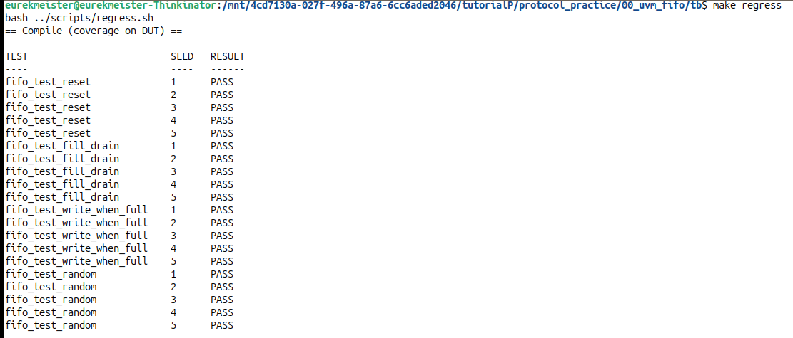
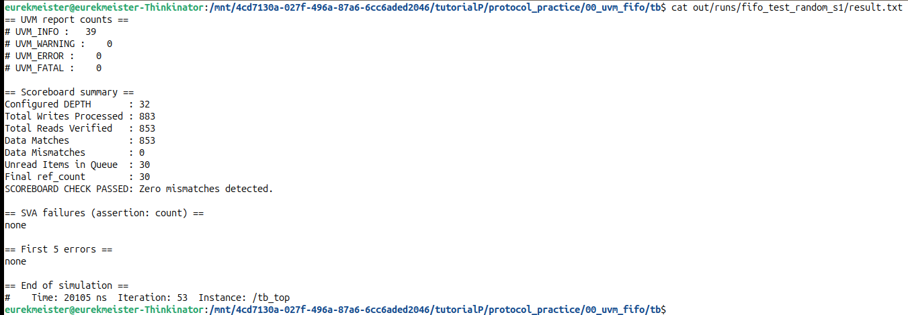
| Metric | Bins | Hit | Coverage | Note |
|---|---|---|---|---|
| Functional (covergroup) | 24 | 24 | 100.00% | All coverpoints and crosses closed |
| Assertions | 10 | 10 | 100.00% | No failures |
| Cover directives | 5 | 5 | 100.00% | |
| Statements | 18 | 17 | 94.44% | The default: item of the count case. The selector has 2 bits and all 4 values are listed, so it cannot be reached |
| Branches | 13 | 12 | 92.30% | |
| Conditions, expressions | 6 | 6 | 100.00% | |
| Toggles | 76 | 75 | 98.68% | rst_n never falls after the first reset (no reset during traffic) |
| Total | 98.17% |
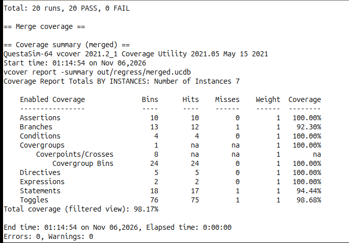
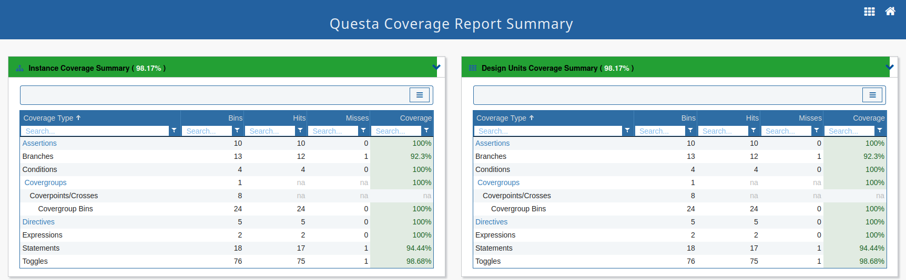
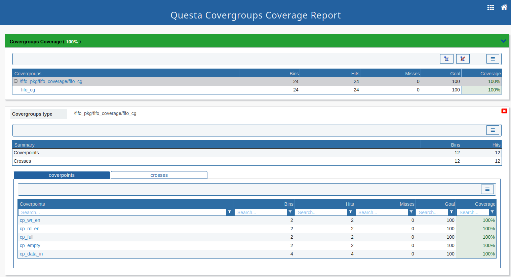
fifo_cg: all five coverpoints at 100%.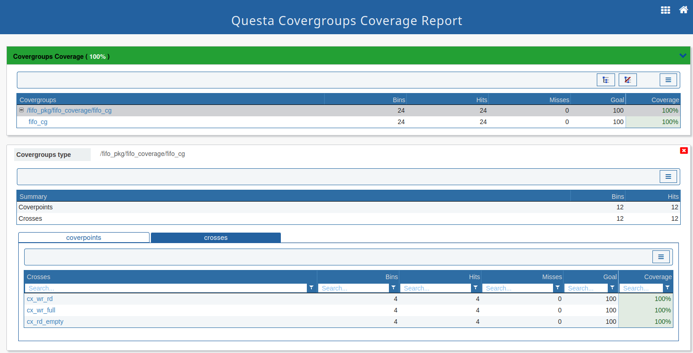
fifo_cg: the three crosses at 100%, including write while full and read while empty.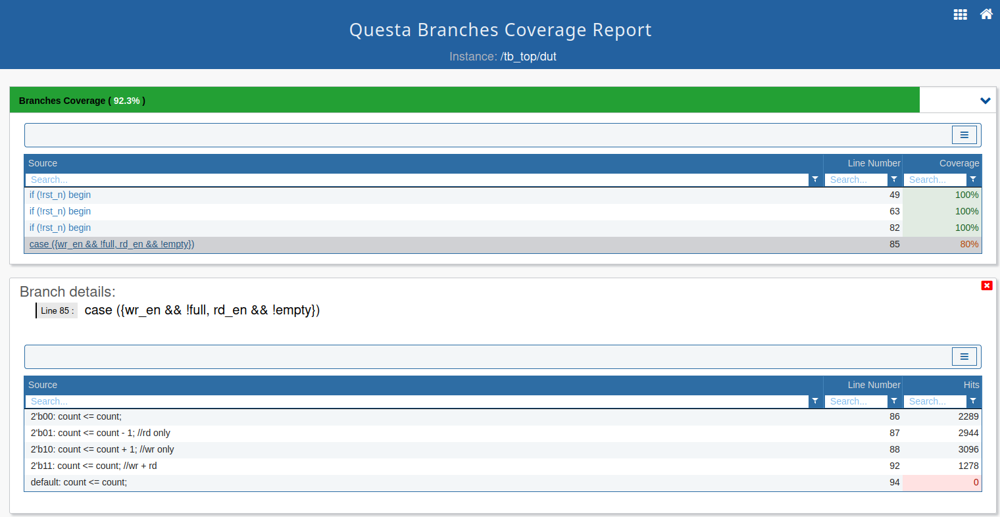
case: every listed case is hit thousands of times; only the unreachable default has 0 hits.All waveforms were taken in the Questa GUI from the clean RTL. The signal list is grouped as clock, inputs, outputs and internal DUT signals.
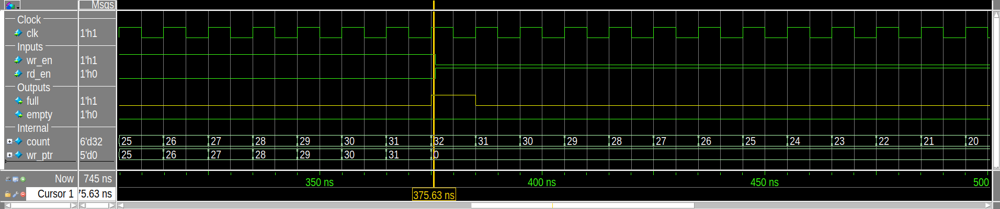
fifo_test_fill_drain, seed 1). count reaches 32 at 375 ns and full rises in the same cycle. wr_ptr wraps from 31 to 0. Reads start on the next edge and full drops.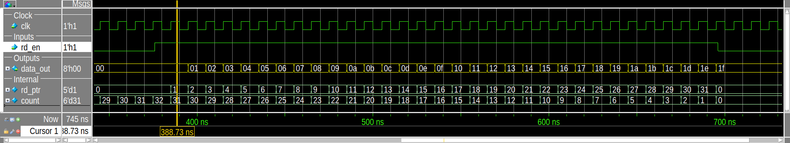
data_out returns 00 to 1F in the order written. data_out is registered, so it updates on the edge that accepts the read while rd_ptr already points to the next entry.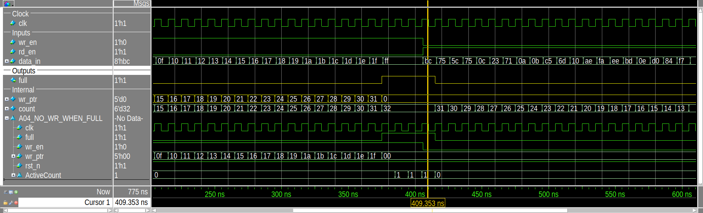
fifo_test_write_when_full, seed 1). After the last fill value 1F, three writes of FF arrive while full = 1. wr_ptr stays at 0 and count stays at 32; assertion A04 reports no failure.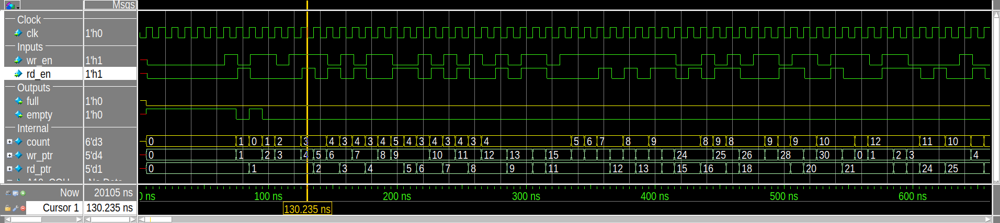
fifo_test_random, seed 1). Reads and writes overlap from the start. At 135 ns a read and a write in the same cycle advance both pointers while count stays at 3.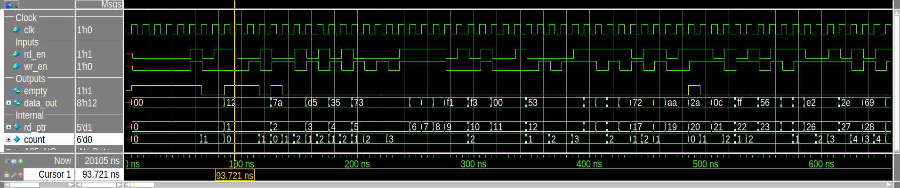
rd_en = 1 while empty = 1; rd_ptr stays at 1 and count stays at 0.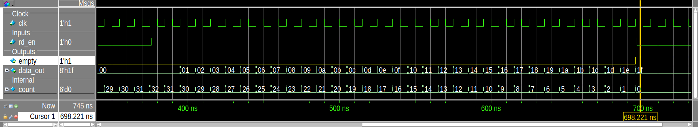
fifo_test_fill_drain. The last value 1F is read, count reaches 0 and empty rises.Five bugs were added behind `ifdef switches. Each was compiled alone and all four tests were run with the
same five seeds as the regression: 20 runs per bug, 100 in total.
| Bug | Faulty behaviour | Failing runs | Checks that fired | First error |
|---|---|---|---|---|
BUG_FULL_EARLY | full asserts at 31 entries | fill_drain 5/5, write_when_full 5/5, random 5/5 | A02; scoreboard in random only | 375 ns |
BUG_WRITE_WHEN_FULL | Write accepted while full | write_when_full 5/5, random 5/5 | A04, scoreboard | 395 ns |
BUG_READ_WHEN_EMPTY | Read accepted while empty | random 3/5 | A05, scoreboard | 75 ns |
BUG_COUNT_RW | count +1 on read and write in one cycle | random 5/5 | A10, scoreboard | 125 ns |
BUG_DATA_BITFLIP | Bit 0 of data_out flips for entry 5 | fill_drain 5/5, write_when_full 5/5, random 5/5 | Scoreboard only | 205 ns |
All five bugs were detected. The assertions catch the control bugs in the cycle where they happen but cannot see
data values. The data corruption in BUG_DATA_BITFLIP is found only by the scoreboard.
fifo_test_reset detects none of the bugs, which is expected because it performs no reads or writes.
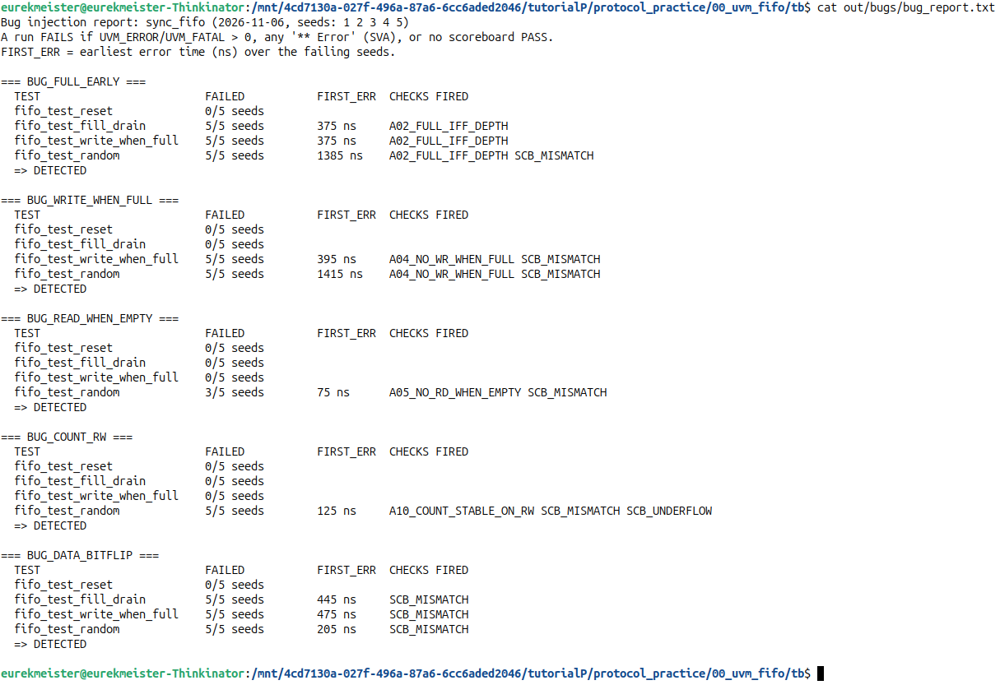
make bugs.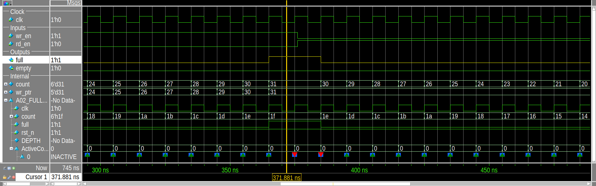
BUG_FULL_EARLY: full rises while count = 31. Assertion A02 fails (red markers).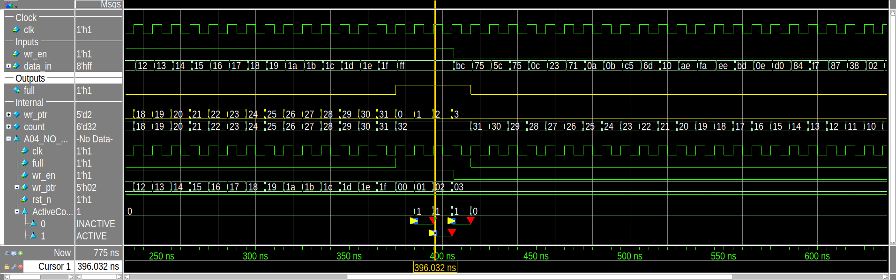
BUG_WRITE_WHEN_FULL: wr_ptr keeps moving (0, 1, 2, 3) during the FF writes while full = 1. A04 fails; the drain then reads overwritten data.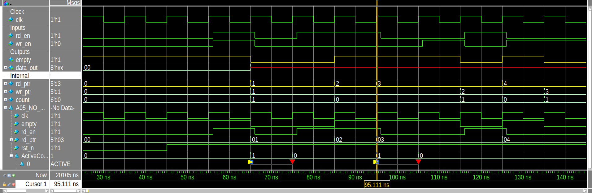
BUG_READ_WHEN_EMPTY (random, seed 2): rd_ptr advances while empty = 1 and data_out becomes unknown. A05 fails at 75 ns.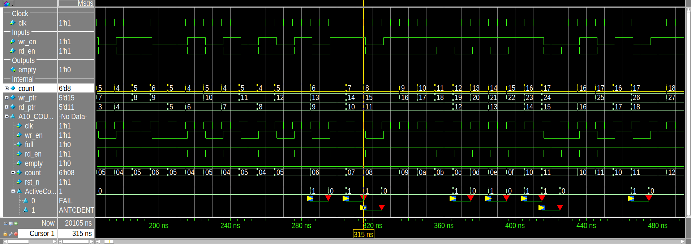
BUG_COUNT_RW (random, seed 1): on a read and write in the same cycle count increments (7 to 8 at 315 ns). A10 fails on every such cycle.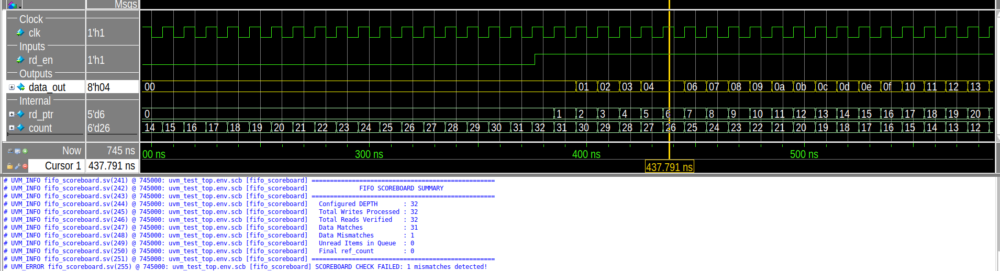
BUG_DATA_BITFLIP: the read of entry 5 returns 04 instead of 05, so the sequence skips from 04 to 06. Flags and pointers are correct and no assertion fires; the scoreboard reports one mismatch and fails the test.The bug campaign also tested the environment. Three weaknesses were found. They are reported as open items and are tracked in the verification plan.
BUG_FULL_EARLY,
fifo_test_fill_drain writes 32 items but the design keeps only 31. The scoreboard reports 0 mismatches and
prints PASS, with one item left in its queue (Figure 21). Only assertion A02 detects the bug. The scoreboard
decides whether a read took place from the DUT's own empty flag, does not compare the flags with its model,
and does not check for leftover items at the end of the test. Planned fix: predict full and empty
from the model, compare them every cycle, and check the queue in check_phase.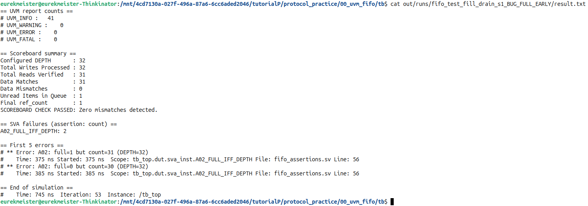
UVM_ERROR : 0 and SCOREBOARD CHECK PASSED, but one item is left in the queue and A02 failed twice.$error, so a
run with failing assertions can still end with UVM_ERROR : 0. The regression scripts work around this by also
failing a run on any simulator ** Error. Planned fix: report assertion failures with `uvm_error.BUG_READ_WHEN_EMPTY was caught by the random test in 3 of 5 seeds, and with seed 1 the cover property for
this case was never hit. Planned fix: add fifo_test_read_when_empty.DATA_WIDTH = 8, DEPTH = 32). The pointer wrap relies on DEPTH being a power of two.default: branch is still counted as a miss; it should be excluded with a written reason.cd 00_uvm_fifo/tb make questa_sim TESTNAME=fifo_test_random # one test, batch mode make result TESTNAME=fifo_test_random SEED=3 # one run with log, verdict, coverage and waveform make regress # 4 tests x 5 seeds, merged coverage make bugs # 5 bugs x 4 tests x 5 seeds make gui TESTNAME=fifo_test_fill_drain SEED=1 BUG=BUG_FULL_EARLY # open one run in the GUI